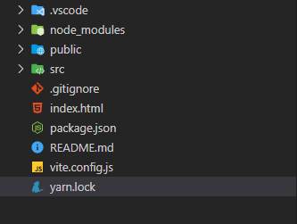

介紹Vue
我們使用Vite來建置，vite可以幫我們建立vue的專案，在local起個開發環境與伺服器，最後可以幫我把整個vue給打包的一個工具。
先來介紹Vue裡的檔案個個是甚麼?

我們從最下面開始說起
- yarn,lock: 紀錄我們當前專案所用到的模組版本
- vite.config.js: vite的設定檔
- package.json: 我們專案的設定檔，包含name(專案名稱)、version(版本)、script(腳本可以更改yarn dev後面的名稱)、dependencies與devDependencies(我們專案所用到的模組有哪些，但只有dependencies會進行專案的打包)
- public: 放我們靜態的資源
- node_moduls: 放的是我們第三方的模組，這些都會記錄在我們的package.json裡